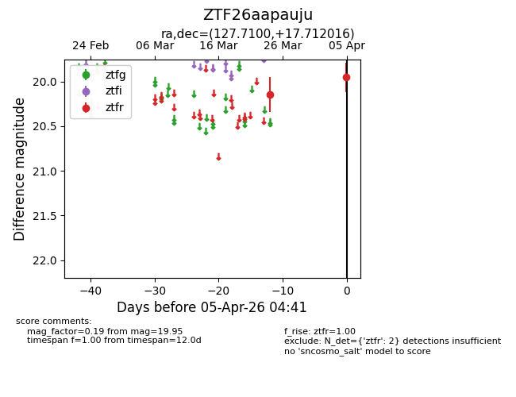
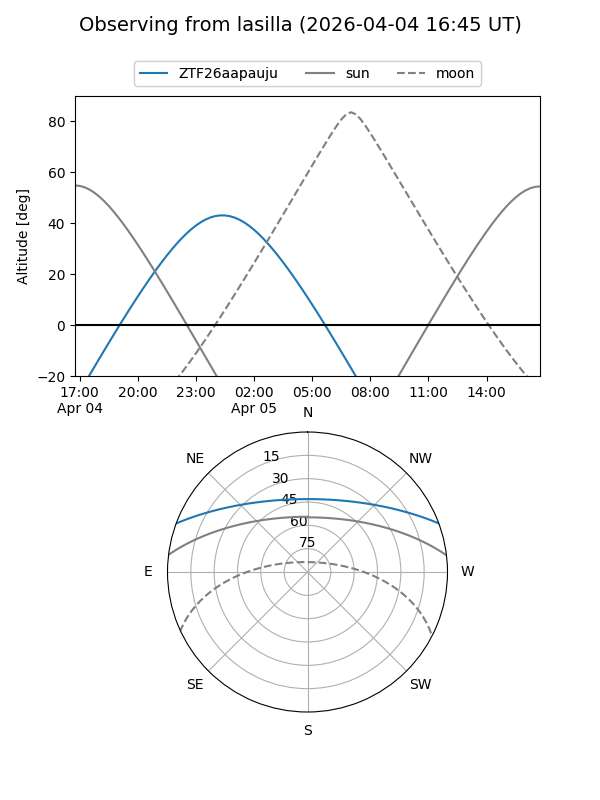
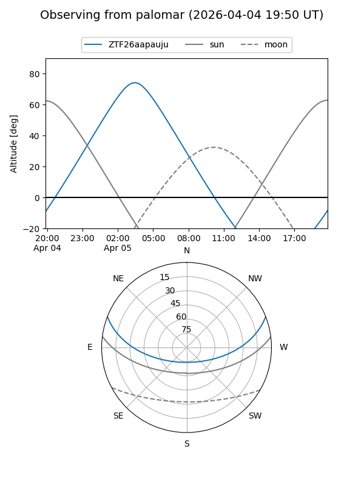

ZTF26aapauju
Target ZTF26aapauju at 2026-04-05 04:44
Aliases and brokers:
FINK: link
Lasair: link
ALeRCE: link
alt names
ZTF26aapauju (ztf,fink_ztf)
Coordinates:
equatorial (ra, dec) = 127.7100,+17.71202
equatorial (HMS+DMS) = 08:30:50.39,+17:42:43.26
galactic (l, b) = (207.1046,+29.67074)
Flags:
Photometry:
last ztfr=19.95
2 ztfr detections
Lightcurve

Visibility


Additional plots